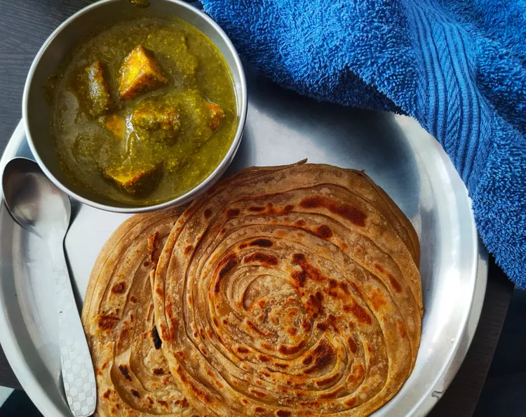

Palak Paneer

Description
Palak paneer is a delicious and healthy Indian vegetarian dish
This dish is best served with plain white rice and can also be enjoyed
with bread roti or naan
Ingredients
- Paneer
- Palak (Spinach)
- Red Chilli powder
- Salt
- Fresh Cream
- Vegetable Oil
- Paneer Masala
Steps
- Heat 1 tablespoon olive oil in a skillet over medium heat; cook and stir onion until slightly tender,
about 5 minutes. Add garlic, coriander, turmeric, garam masala, red pepper flakes, curry powder, cumin, and salt;
cook and stir until fragrant, about 1 minute.
- Mix water, spinach, tomatoes, and ginger into the onion mixture;
simmer for 20 minutes. Remove from heat and cool slightly, about 5 minutes.
- Transfer spinach mixture to a blender and blend until smooth.
- Heat remaining 1 tablespoon olive oil in a skillet over medium heat; cook and stir paneer until lightly browned,
about 5 minutes. Stir pureed spinach mixture into skillet with paneer. Cook until heated through, 3 to 5 minutes.